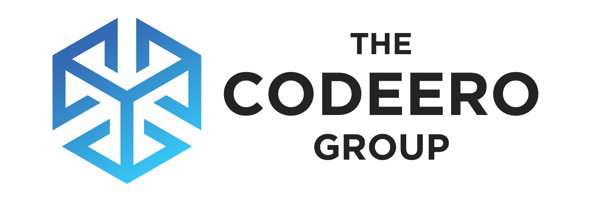
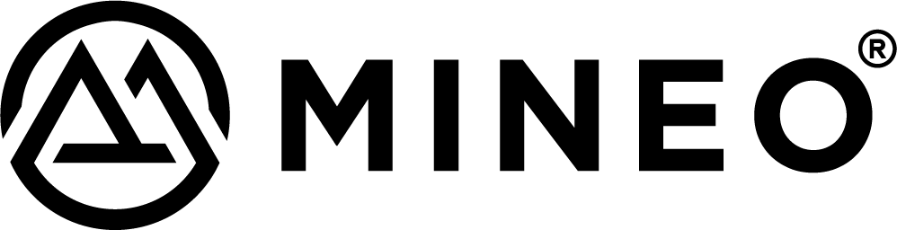
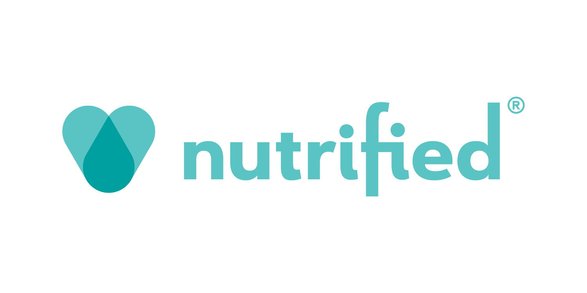
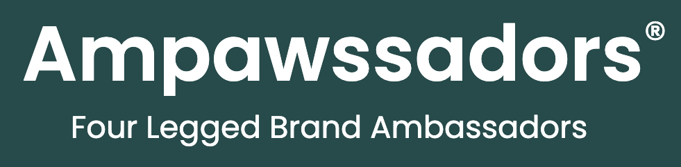
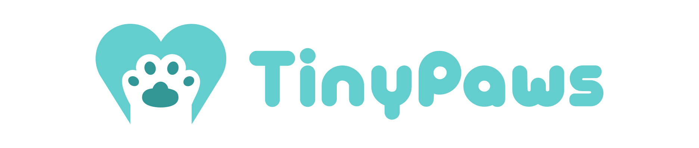
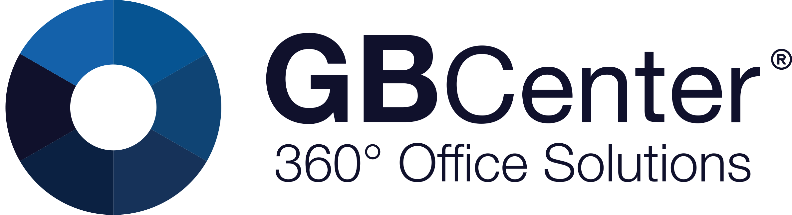

The Codeero Group

Founded: 2014
The Codeero Group is a dynamic creative agency that has evolved significantly since its inception. Originally established as Julo's Development by Julian Engel, the company rebranded in 2019 to reflect its expanded services and growing influence in the digital landscape. With a focus on innovation and client satisfaction, The Codeero Group has become a leader in providing comprehensive digital solutions.
The group's expertise spans across various domains, including:
- Web and mobile application development
- Branding and digital marketing strategies
- User experience (UX) and user interface (UI) design
- Event planning and execution for both virtual and physical spaces
- Technology-driven educational and community development initiatives
The Codeero Group operates through three specialized divisions:
- Codeero Development: This division is at the forefront of technological innovation, focusing on creating robust, scalable web and mobile applications. The team employs cutting-edge technologies and best practices in software development to deliver solutions that drive business growth and enhance user engagement.
- Codeero Events: Specializing in event planning and execution, this division bridges the gap between digital and physical experiences. From corporate conferences to product launches, Codeero Events crafts memorable occasions that align with clients' branding and objectives.
- Codeero Foundation: As the group's philanthropic arm, the Codeero Foundation is dedicated to leveraging technology for social good. It supports education and community development through innovative, tech-driven initiatives, aiming to bridge the digital divide and empower communities.
Since 2021, The Codeero Group has actively diversified its portfolio, venturing into new markets and industries. This expansion reflects the group's commitment to staying at the forefront of digital innovation and its ability to adapt to evolving market needs. By fostering a culture of creativity and continuous learning, The Codeero Group consistently delivers solutions that combine technical excellence with strategic insight.
Founder: Julian Engel
Website: www.codeero.com
Mineo Minerals

Founded: 2021
Mineo Minerals, headquartered in Cyprus, is a cutting-edge research and development company at the forefront of natural pet wellness solutions. Founded with the vision of revolutionizing pet care through science-backed, nature-inspired products, Mineo has quickly established itself as a pioneer in the industry.
The company's core strengths lie in its innovative approach to product development:
- Scientific Rigor: Mineo employs a team of experienced researchers and veterinary experts who work collaboratively to uncover the potential of natural ingredients for pet health.
- Sustainability Focus: All product development at Mineo is underpinned by a commitment to environmental responsibility, ensuring that the benefits for pets don't come at a cost to the planet.
- Quality Control: Rigorous testing and quality assurance processes are in place to ensure that every product meets the highest standards of safety and efficacy.
- Innovation Pipeline: Mineo maintains an active research program, continually exploring new natural compounds and their potential applications in pet wellness.
As the driving force behind the Nutrified brand, Mineo Minerals is responsible for developing groundbreaking products like the Pure Goodness line. This includes the popular Happy Tummies supplement, which utilizes natural zeolite for digestive health, and the innovative Healthy Minds oil, which harnesses the benefits of CBD for pet cognitive support.
Looking to the future, Mineo Minerals has ambitious plans for expansion across Europe. This growth strategy aims to bring its innovative pet wellness solutions to a broader market, while also tapping into diverse research talent and natural resources across the continent.
Founder: Natalia Kawa
Director: Julian Engel
Website: www.mineo.cy
Brands under Mineo Minerals:
Nutrified

Nutrified stands at the forefront of the natural pet wellness movement, offering a range of innovative, science-backed products designed to enhance the health and happiness of pets. Born from a deep-seated love for animals and a commitment to their wellbeing, Nutrified has quickly become a trusted name among pet parents who prioritize natural, sustainable solutions for their furry companions.
The brand's flagship Pure Goodness line exemplifies Nutrified's dedication to harnessing the power of nature for pet health. Products like Happy Tummies, a 100% natural zeolite supplement, target specific aspects of pet wellness such as digestive health. Meanwhile, the Healthy Minds oil, infused with carefully sourced CBD, supports cognitive function and overall wellbeing in pets.
What sets Nutrified apart is its unwavering commitment to quality and transparency. Every product is the result of extensive research and development by Mineo Minerals, ensuring that it not only meets but exceeds the expectations of discerning pet owners. The brand's ethos of "Only The Best Nature Has To Offer" is reflected in every aspect of its operations, from ingredient sourcing to packaging choices.
Website: www.nutrified.com
Ampawssadors

The Ampawssadors program is a unique and integral part of the Nutrified brand, embodying the company's commitment to community engagement and real-world product validation. This innovative initiative transforms everyday pets into brand ambassadors, creating a vibrant network of furry advocates for Nutrified's natural wellness solutions.
At its core, the Ampawssadors program is about celebrating the diverse stories of pets and their owners who have embraced the Nutrified lifestyle. These four-legged ambassadors come from all walks of life, representing a wide range of breeds, sizes, and personalities. Their experiences with Nutrified products are shared across various platforms, providing authentic testimonials that resonate with pet owners worldwide.
The program goes beyond mere marketing, playing a crucial role in Nutrified's product development process. Ampawssadors and their owners provide valuable feedback on existing products and participate in trials for new formulations. This real-world testing ensures that Nutrified's offerings are not just scientifically sound but also practical and effective in day-to-day use.
Ampawssadors are featured prominently in Nutrified's marketing materials, from social media content to product packaging. The program also includes special events, such as the popular Ampawssador Cat Walk, where these furry celebrities strut their stuff on the red carpet, creating engaging experiences for pet owners and generating buzz around the brand.
Website: www.ampawssadors.com
TinyPaws

TinyPaws represents Nutrified's exciting venture into specialized care for the smallest and youngest members of the pet community. Set to launch in early 2025, TinyPaws is poised to revolutionize the approach to nutrition and wellness for puppies, kittens, and other small pets.
This innovative product line is being developed with a deep understanding that the early stages of a pet's life are crucial for their long-term health and wellbeing. TinyPaws will offer a range of products specifically formulated to support the unique needs of growing animals, from their developing digestive systems to their blossoming cognitive functions.
In line with Nutrified's core values, TinyPaws will maintain an unwavering commitment to natural, sustainable ingredients. The product development team at Mineo Minerals is working diligently to create formulations that provide optimal nutrition without compromising on the brand's dedication to purity and environmental responsibility.
While specific product details are still under wraps, pet owners can expect a comprehensive range of supplements, foods, and care items designed to give young pets the best possible start in life. The TinyPaws line promises to combine cutting-edge nutritional science with Nutrified's signature focus on natural, wholesome ingredients.
Websites: www.tinypaws.com, www.tinypaws.app
GBCenter

Founded: 1997
Acquired: 2021
GBCenter, strategically located in the heart of Limassol, Cyprus, represents a pioneering concept in comprehensive office solutions. With a rich history dating back to 1997 and a transformative acquisition by The Codeero Group in 2021, GBCenter has evolved into a state-of-the-art business hub that caters to the diverse needs of modern enterprises.
Following its acquisition, GBCenter underwent a complete overhaul and renovation, emerging as a cutting-edge facility that seamlessly blends technology, sustainability, and functionality. This rejuvenation has positioned GBCenter at the forefront of the office solutions sector in Cyprus and the wider Mediterranean region.
Key features that set GBCenter apart include:
- Smart Office Infrastructure: The center boasts advanced automation systems for lighting, climate control, and security. These smart features not only enhance the comfort and productivity of occupants but also contribute to significant energy savings.
- Cutting-Edge Technology: GBCenter is equipped with state-of-the-art technology, including high-speed fiber-optic internet, advanced videoconferencing systems, and smart collaborative spaces. This technological backbone ensures that businesses operating from GBCenter have access to the tools they need to compete in the global marketplace.
- Superior Connectivity: Understanding the critical importance of seamless communication in today's business world, GBCenter offers robust connectivity solutions. The infrastructure supports seamless integration of devices and cloud services, enabling businesses to stay connected and productive at all times.
- Sustainability Focus: In line with growing environmental concerns, GBCenter has implemented a range of energy-efficient systems and sustainable practices. From smart energy management to eco-friendly materials, the center is committed to minimizing its environmental footprint while providing a healthier workspace for its occupants.
Beyond its physical attributes, GBCenter distinguishes itself through a comprehensive range of business services, including:
- Company incorporation and structuring
- Ongoing company management and administration
- Accounting and financial reporting services
- Legal consultation and compliance support
- Banking liaison and financial services coordination
This holistic approach allows GBCenter to cater to businesses of all sizes, from startups looking for their first professional address to established corporations seeking a strategic base in Cyprus. The center's team of dedicated specialists works closely with each client to provide tailored solutions that meet their specific needs and objectives.
As part of The Codeero Group ecosystem, GBCenter benefits from synergies with other group companies, particularly in areas of technology integration and digital transformation. This connection allows GBCenter to stay at the cutting edge of office technology trends and continuously evolve its offerings to meet the changing needs of the business community.
In essence, GBCenter is more than just an office space provider; it's a partner in business growth and innovation. By offering a blend of advanced infrastructure, comprehensive services, and a supportive business environment, GBCenter plays a crucial role in fostering entrepreneurship and economic development in Cyprus and beyond.
Director: Georgia Papadopolou
Website: www.gbcenter.com